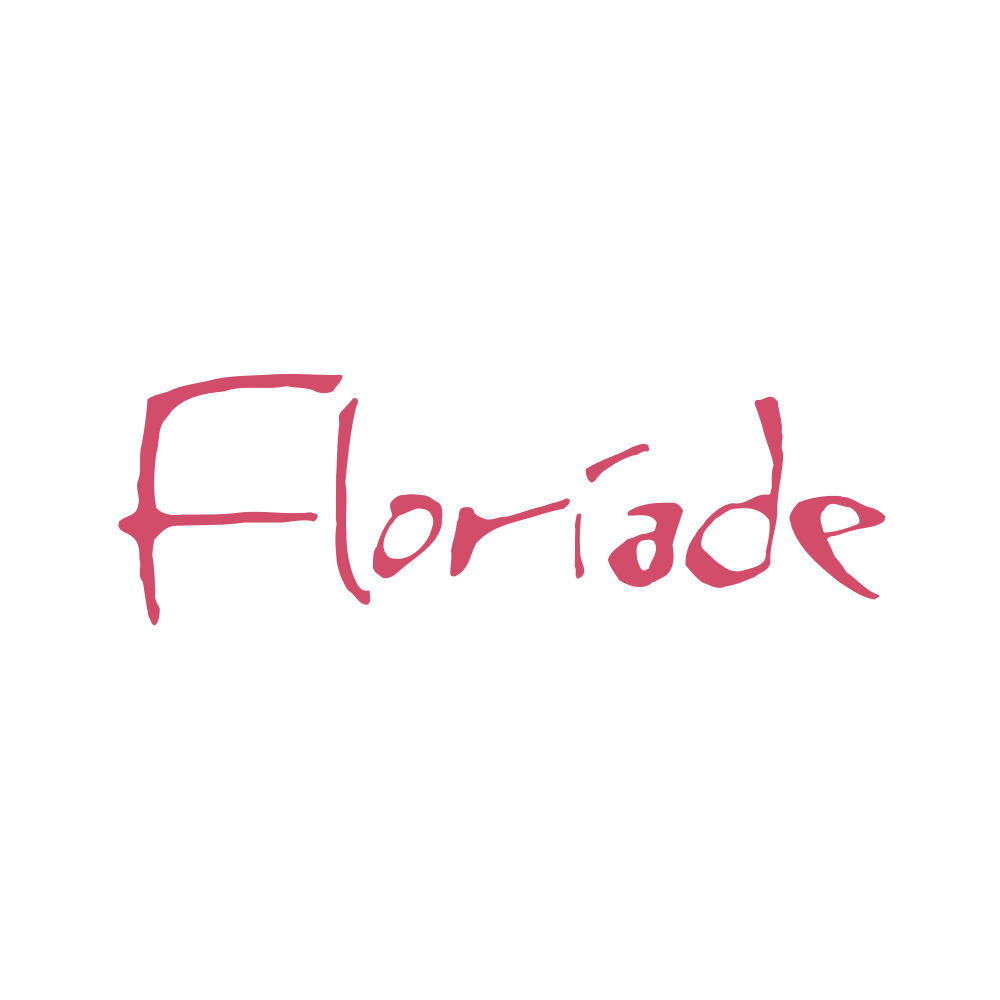
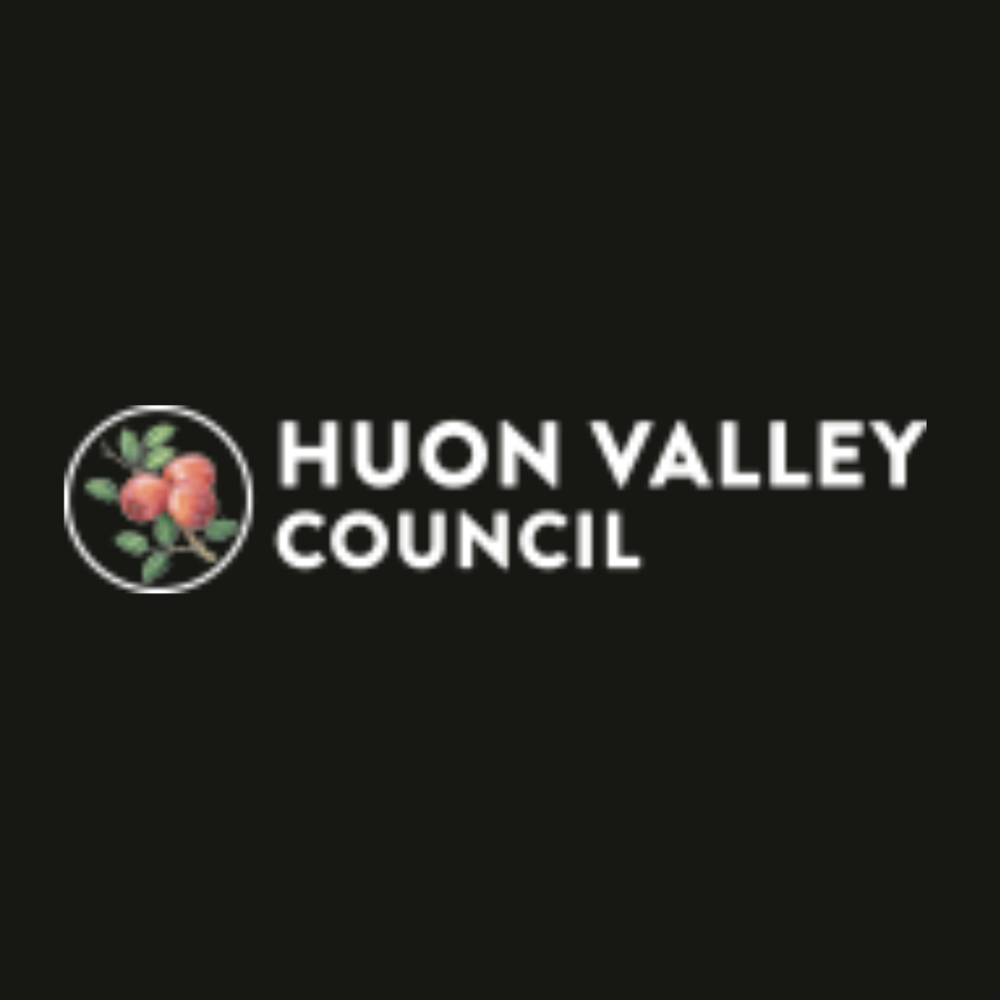

Connecting Cultures Through Photography, Community and Digital Ethics
Jacky Lee is a distinguished visual artist, educator and award-winning photographer whose work bridges art, culture and technology. With over two decades of experience, his images explore the quiet poetry of landscapes, the geometry of architecture and the human stories that lie between nature and the built environment.
Born in Hong Kong and now based in Australia, Jacky developed a lifelong fascination with light, space and community. Entirely self-taught, he has shaped a visual language marked by thoughtful composition, atmospheric sensitivity and a deep respect for the places and people he photographs.
Working across landscape, nightscape, architectural, black-and-white and aerial photography, Jacky combines artistic intention with technical mastery, drawing on his accreditation as a commercial drone pilot to capture perspectives that reveal both the beauty and fragility of our shared world.
Beyond his artistic practice, Jacky is dedicated to using photography and digital literacy to connect cultures, empower young people and foster responsible image-making in an era transformed by artificial intelligence.
View Recognition →
Jacky's award-winning photographs have been exhibited worldwide, with showcases across Australia, Canada, Colombia, Cyprus, Germany, Greece, Hong Kong, Hungary, Italy, Mexico, the Philippines, South Africa, Spain, Sweden, Thailand, the UK, the USA and Vietnam.
His major projects include Abstract Skyscape, Aerial Hong Kong, Colours of Australia, Secret Parts of Hong Kong, and The Beauty of North-West New Territories. Jacky also contributed to the Mui Tsz Lam Art Revitalization Project, highlighting his versatility and creative engagement in cultural and community-based initiatives.
View Exhibitions →
Beyond the lens, Jacky contributes widely to the global photographic community. He serves with the Australian Photographic Society (APS), mentors photographers through both the Photographic Society of America (PSA) and the Royal Photographic Society's (RPS) Australian Chapter, and is the Web Editor of the RPS Landscape Group.
Jacky also supports the RPS International Team as Content Manager, sits on the Board of Directors of the International Association of Panoramic Photographers (IAPP), and helps coordinate the Four Nations Inter-Country Photography Competition.
Jacky's multidisciplinary background as a Chartered Building Engineer and Chartered Building Surveyor enriches his visual work with architectural insight and technical precision.
As an author, educator and speaker, he shares his expertise through books, workshops and guest lectures, including at the University of Hong Kong (HKU). He also contributes as a photography advisor to the Hong Kong Biodiversity Museum and serves as a judge for national and international competitions.
Discover genuine testimonials from collaborators, clients, and peers. Each endorsement provides a unique perspective on Jacky's impact in the world of visual art and photography.


Jacky's Approach to Creativity, Community and Digital Integrity
For Jacky, art is a way of seeing and a way of living. He promotes photography as a mindful, therapeutic practice that encourages people to slow down, appreciate the everyday and reconnect with their emotional well-being.
As the Founder of the Photography Society of Hongkongers in Australia (PSHKA), Jacky fosters creativity, cultural exchange and community connection — bringing Hongkongers together while building bridges with the wider Australian community.
Jacky's work sits at the intersection of art, technology and ethical innovation. He plays an active role in shaping global conversations around AI and visual integrity, serving as Chair of the APS AI & Authorship Standards Sub-Committee, a member of the RPS AI Working Group, and a member of the CAPA AI Advisory Committee. As a member of Adobe's Content Authenticity Initiative (CAI), he advocates for transparency, digital literacy and the protection of truth in the age of synthetic imagery.
 Australian Photographic Society
Australian Photographic Society
 CAPA
CAPA

Floriade
Huon Valley Council National Geographic
National Geographic
 PSA
Royal Photographic Society
PSA
Royal Photographic Society
 University of Hong Kong
University of Hong Kong
 Walk in Hong Kong
Walk in Hong Kong
A curated selection of collections spanning landscapes bathed in golden light, stark monochrome studies, the raw beauty of nature, and breathtaking aerial perspectives.

Capturing the ephemeral magic of sunrise and sunset, where light transforms ordinary landscapes into extraordinary canvases of warmth and wonder.
View Collection →
Stripped of colour, these images reveal the essence of form, texture, and emotion through the timeless art of black and white photography.
View Collection →
An intimate exploration of the natural world, weaving together intricate details of flora, fauna, and the untamed wilderness into visual poetry.
View Collection →
Perspectives from above that redefine how we see the world, revealing patterns, symmetry, and hidden beauty only visible from the sky.
View Collection →Whether you're looking for exclusive fine art prints, professional photography services, or collaboration opportunities, I'd love to hear from you.
Connect with Jacky →